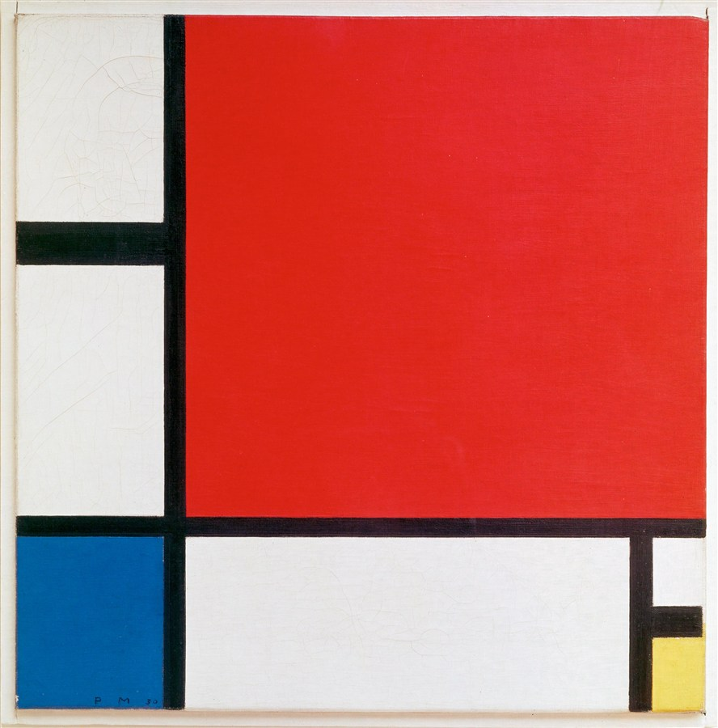
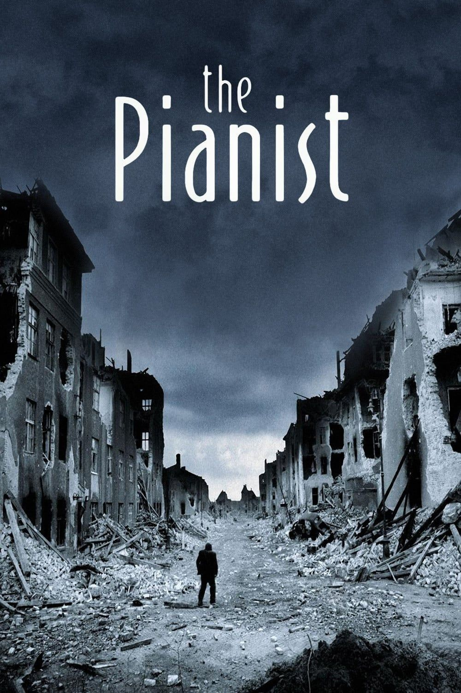
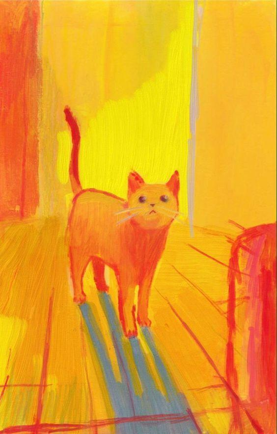
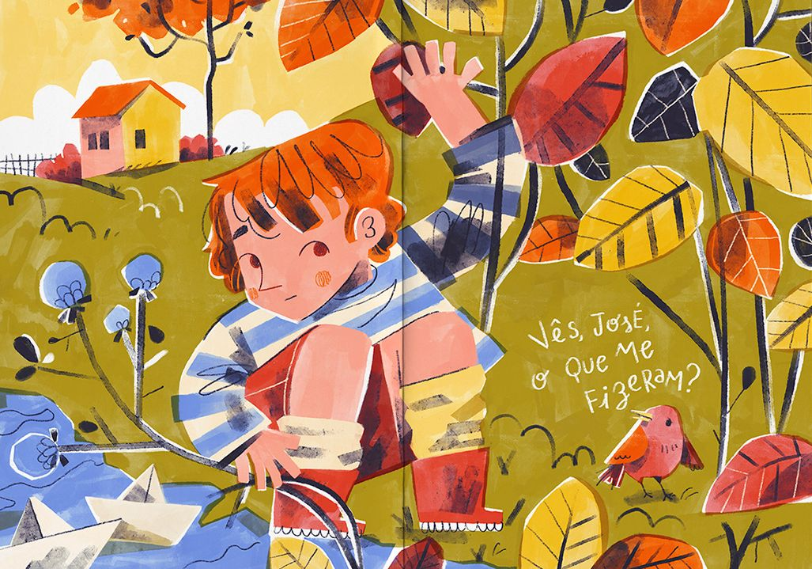

Teoria das Cores
Mundo SENAI | SobradinhoTécnico em Design Gráfico
Introdução
Cor é identidade.
Primárias
Secundárias
Terciárias
Propriedades da cor

A cor em si.
Intensidade.
Claro ou escuro.
Experimente
Combinações harmônicas
Desafio



joaomiguel7oliveira.github.io/teoria-das-cores
← → para navegar · F tela cheia